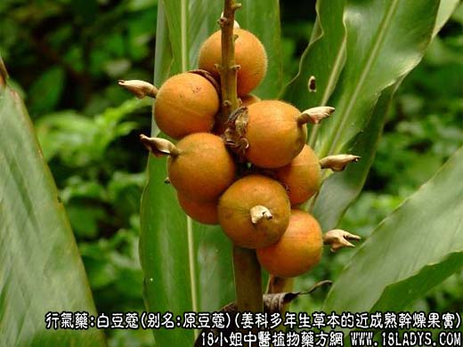
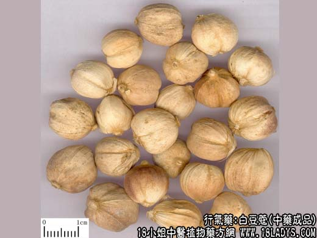
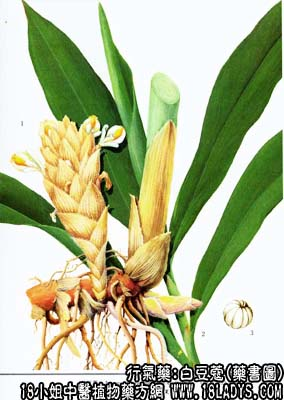

白豆蔻为常用中药。《名医别录》列为果部上品，《本草纲目》列入草部芳草类，均系指草豆蔻。白豆蔻之名始终见《开宝本草》，前者商品称草豆蔻，后者为习用得豆蔻。
别名：原豆蔻、紫豆蔻、豆蔻、豆叩。
来源：为姜科多年生草本植物白豆蔻的近成熟干燥果实，均为栽培。
产地：出产于越南、泰国、柬埔寨、印尼等地。
性状鉴别：果实类圆球形，具不显著的钝三棱，顶端有突起的花柱基，下端带有果柄或果柄脱落后凹入的痕迹。直径约为1.2~1.7厘米。表面单黄白色，光滑或略显隆起线（维管束）多条，花柱基及果柄痕的周围，均具密集的棕色毛茸。果皮脆，木质，易纵向裂开，内含种子20~30粒，集结成球，习称“蔻球”。蔻球分三瓣，有白色隔膜分隔，每瓣有种子7~10粒，习称“蔻米”或“蔻仁”，为不规则的多面体，直径3~4毫米，表面暗棕色或灰棕色，有微细的波纹，一端有圆形小凹点。质坚硬。断面白色粉质。气芳香，味辛凉，略似樟脑。
以个大完整，壳薄，种仁饱满者为佳。
主要成分：含挥发油，其中主要为d-龙脑，d-樟脑等。
药理作用：健尾止吐；祛寒止泻，有收敛作用。
炮制：豆蔻：去壳取仁，捣碎。小白蔻：带壳捣碎用。
性味：辛，热。
归经：入肺、脾、胃经。
功能：行气温中，散寒燥湿，开胃消食，解酒毒。
主治：寒湿气滞，胸闷不畅，脘腹胀满，呕吐呃逆，消化不良。
临床应用：1、治胃寒痛呕吐，唇舌淡白，口泛清涎，食欲不振（相当于某些类型急性胃炎，溃疡病），可用豆蔻6g，配吴茱萸、延胡索、高良姜、香附各6g。水煎服，有散寒、止痛、止呕作用。
2、治虚寒久泻（慢性痢疾、慢性结肠炎）用煨草寇，煨诃子等，方如草豆蔻汤。
用量：3~6g，入丸散剂服较好。
处方举例：草豆蔻汤：煨豆蔻3g，煨木香3g，煨诃子2.4g，条芩9g，火炭母9g，水煎服。
注：1、小豆蔻，三角蔻、印度小白蔻。为姜科多年生草本植物小豆蔻及其变种的干燥近成熟蒴果。均为栽培。主产于斯里兰卡、印度等地。果实为长卵形，两端尖，具三棱形，长径1~1.5厘米，短径约1厘米。表面乳白色至淡黄棕色。质坚韧，不易开裂，味芳香而辛辣，无樟脑味。过去曾哟进口，现已少见。
2、豆蔻，是进口商品，过去香港商人为了追求利润，分成加大贡蔻、拣蔻、顶紫蔻、十开蔻等。现由产地原货直接进口，统称白豆蔻。其个大完整，种仁饱满者称紫莞；个小色暗有时带棕色，外皮抽皱，种仁瘪瘦者称小白蔻或枫蔻。
3、豆蔻脱落或剥下的果壳，习称豆蔻皮。其干燥花序称豆蔻花，少数为穗状膜质的碎片，亦供药用。效用同蔻仁而力薄。